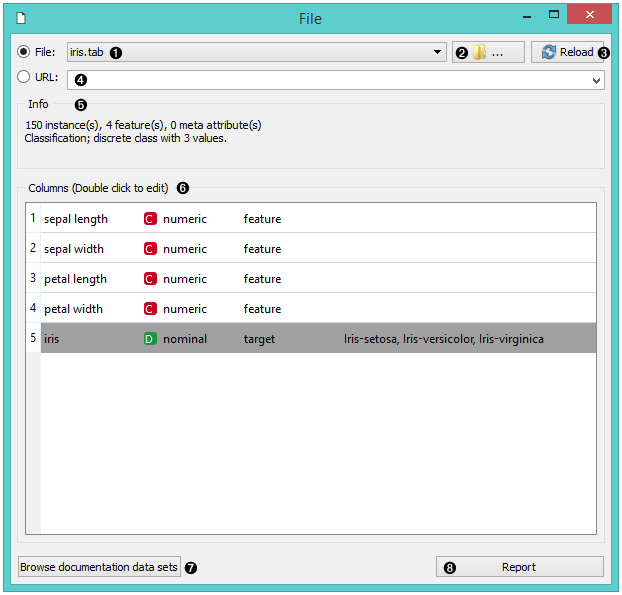
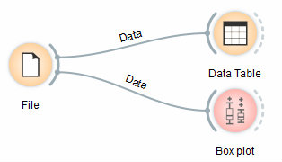
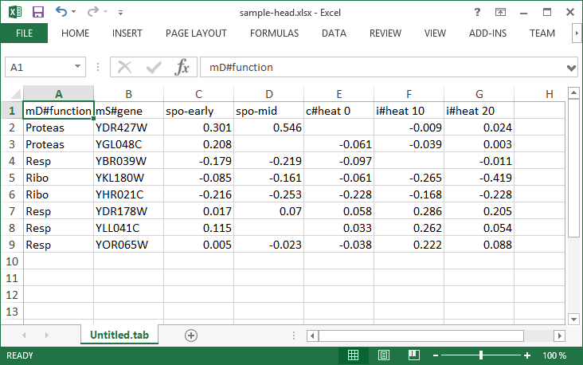

File
Reads attribute-value data from an input file.
Outputs
- Data: dataset from the file
The File widget reads the input data file (data table with data instances) and sends the dataset to its output channel. The history of most recently opened files is maintained in the widget. The widget also includes a directory with sample datasets that come pre-installed with Orange.
The widget reads data from Excel (.xlsx), simple tab-delimited (.txt), comma-separated files (.csv) or URLs. For other formats see Other Formats section below.

- Browse through previously opened data files, or load any of the sample ones.
- Browse for a data file.
- Reloads currently selected data file.
- Insert data from URL addresses, including data from Google Sheets.
- Information on the loaded dataset: dataset size, number and types of data features.
- Additional information on the features in the dataset. Features can be edited by double-clicking on them. The user can change the attribute names, select the type of variable per each attribute (Continuous, Nominal, String, Datetime), and choose how to further define the attributes (as Features, Targets or Meta). The user can also decide to ignore an attribute.
- Browse documentation datasets.
- Produce a report.
Example
Most Orange workflows would probably start with the File widget. In the schema below, the widget is used to read the data that is sent to both the Data Table and the Box Plot widget.

Loading your data
- Orange can import any comma, .xlsx or tab-delimited data file or URL. Use the File widget and then, if needed, select class and meta attributes.
- To specify the domain and the type of the attribute, attribute names can be preceded with a label followed by a hash. Use c for class and m for meta attribute, i to ignore a column, and C, D, S for continuous, discrete and string attribute types. Examples: C#mpg, mS#name, i#dummy.
- Orange’s native format is a tab-delimited text file with three header rows. The first row contains attribute names, the second the type (continuous, discrete or string), and the third the optional element (class, meta or time).

Read more on loading your data here.
Other Formats
Supported formats and the widgets to load them:
- distance matrix: Distance File
- predictive model: Load Model
- network: Network File from Network add-on
- images: Import Images from Image Analytics add-on
- text/corpus: Corpus or Import Documents from Text add-on
- single cell data: Load Data from Single Cell add-on
- several spectroscopy files: Multifile from Spectroscopy add-on